Spec-driven AI coding.
Finally visual.
Chat that remembers why. A workbench that tracks what's shipped. All inside VS Code — so your agents and your specs live in the same room.
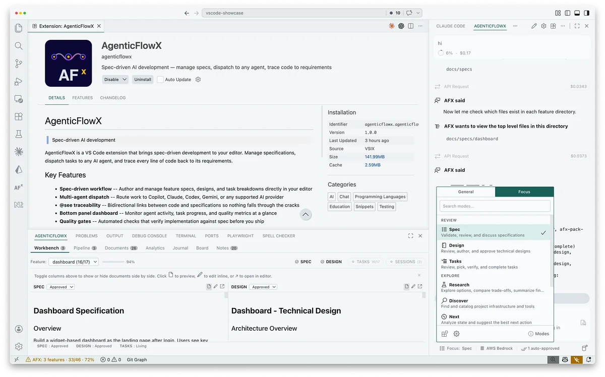
Two surfaces, one loop
Chat on the side. Workbench on the bottom.
Most AI coding tools give you a chat and hope you remember everything else. AFX keeps the conversation in one surface and the project's memory in another — so the agent can talk about real progress, not just tokens.
Side panel · Chat
An agent that reads your specs, not just your cursor.
Dual-track modes. Pick General when you're coding; switch to Focus for spec, design, tasks, research, or discovery — lean prompts tuned for one job at a time.
- Focus modes: Spec, Design, Tasks, Research, Discover, Next
- Context strips pull in the right files automatically
- Bring your own key — Claude, GPT, Gemini, local, anything
Bottom panel · Workbench
The bird's-eye view your chat has been missing.
Seven tabs across the bottom, each one a different lens on the same project: what's in flight, what's specced, what's shipped, what's still thinking.
- Workbench, Pipeline, Documents, Analytics, Journal, Board, Notes
- Click any tab — chat stays open, context stays loaded
- Everything reads from your repo — nothing phones home
Inside the workbench
Seven views. One project. Zero context switching.
Click through the tabs your future self will actually use. Same keystrokes as the bottom panel in VS Code.
Workbench · side-by-side editor
Spec, design, tasks — in the same view.
Pick a feature, toggle which columns you want open, and edit inline. Resizable columns, persistent widths, live progress and freshness indicators, and a one-click jump to the full VS Code editor when you need more room.
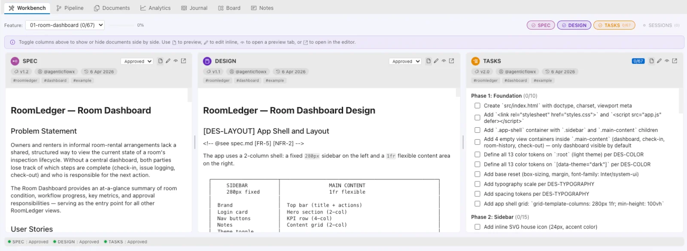
Pipeline · feature status
Where every feature stands — three ways to see it.
Search, filter by status (In Progress, Ready, Complete, Blocked, Not Started), sort by name or progress, and drill into any feature's spec, design, and tasks. Pivot between a Timeline grouped by stage, a scrollable Grid of cards, or a Kanban laned by next action.
Grid view available in-editor.
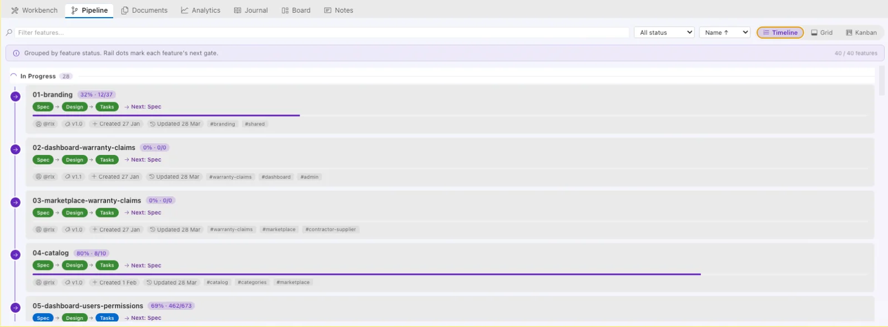
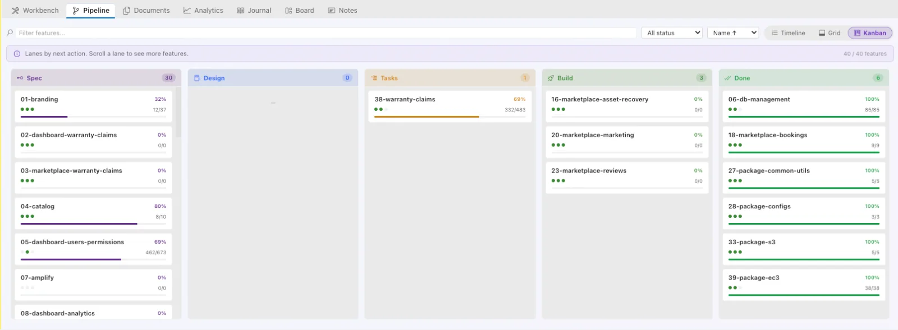
Documents · repo-wide browser
Every doc in your repo, tree-browsable.
Markdown, PDFs, images, and anything else — all reachable from one filterable tree. Markdown renders inline with syntax highlighting; PDFs and binaries hand off to VS Code's native preview. Content search across everything in the workspace.
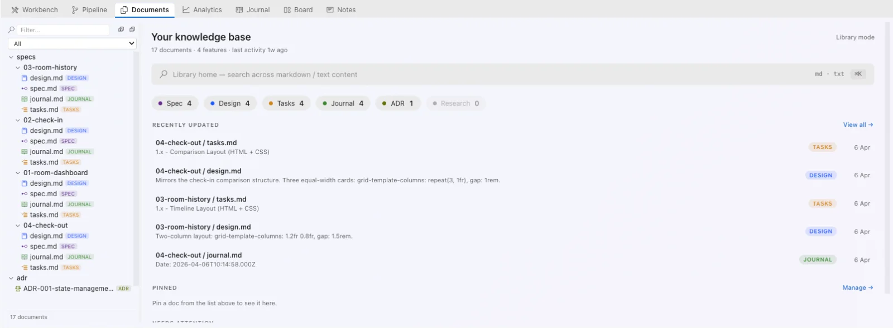
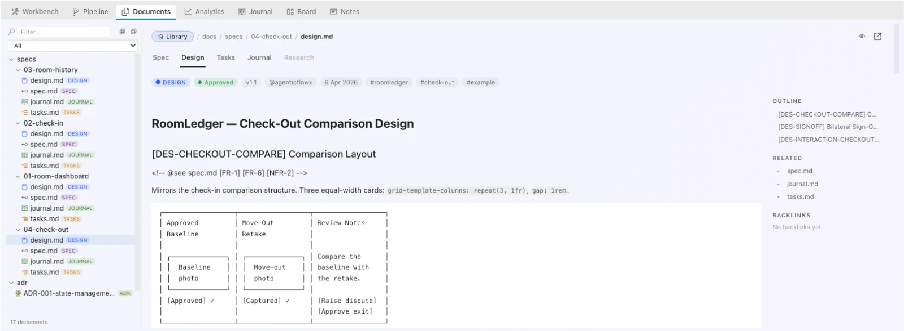
Analytics · portfolio health
Feature health, velocity, and where to look next.
A true portfolio dashboard: overall health, velocity, shipped count, and a weekly activity heatmap. Attention cards surface features that are almost done; traceability coverage shows how many functions link back to their specs. Switch ranges across 7D · 30D · 90D · All.
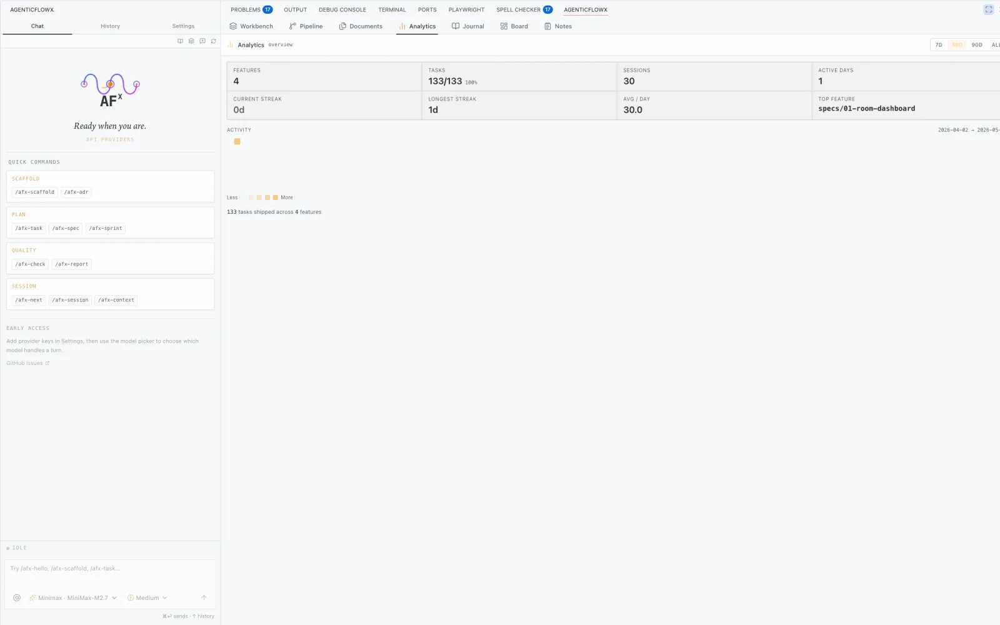
Journal · discussion timeline
Every decision, searchable and timestamped.
A dated timeline of discussions, context, summaries, and decisions — filterable by feature, status, and date. Left sidebar for the timeline, right pane for the entry, every item linking straight back to the source markdown.
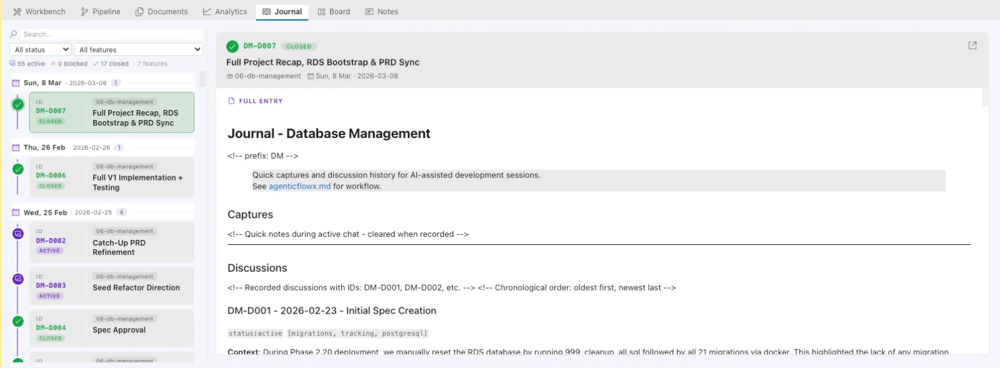
Board · markdown kanban
Kanban boards that live in your repo.
Create named boards, drag cards between columns, reorder columns, edit cards inline — then flip to the raw markdown any time. Each board is just a file on disk; version it, branch it, review it like any other code.
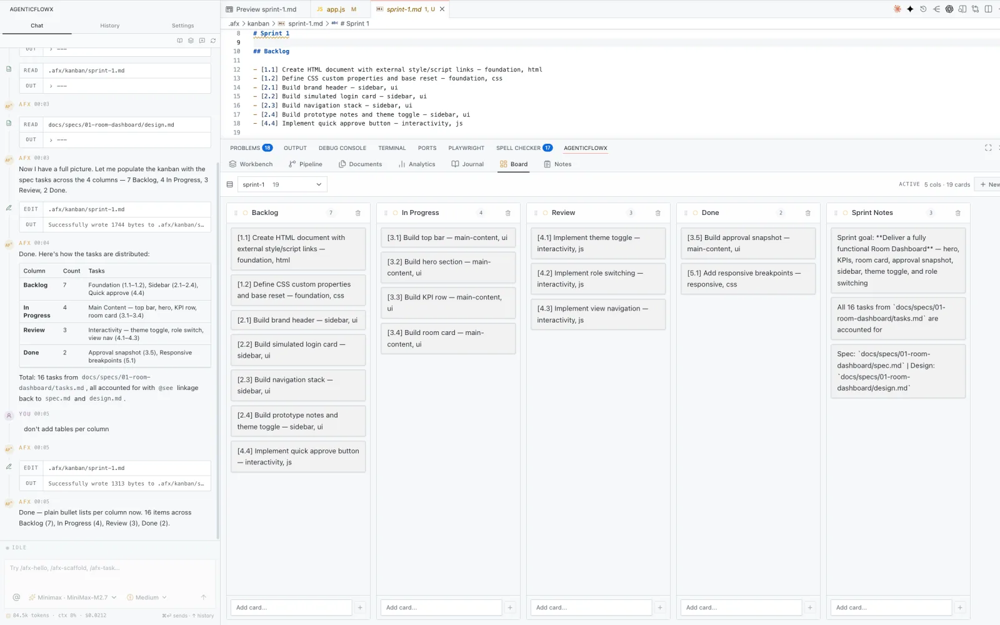
Notes · quick capture
Type. Enter. Done.
A capture box on the left, a dated timeline on the right. Press Enter to save
(Shift+Enter for a newline), filter by Today · Week · Month · All,
search across everything. Stored in .afx/notes.md — just a file.
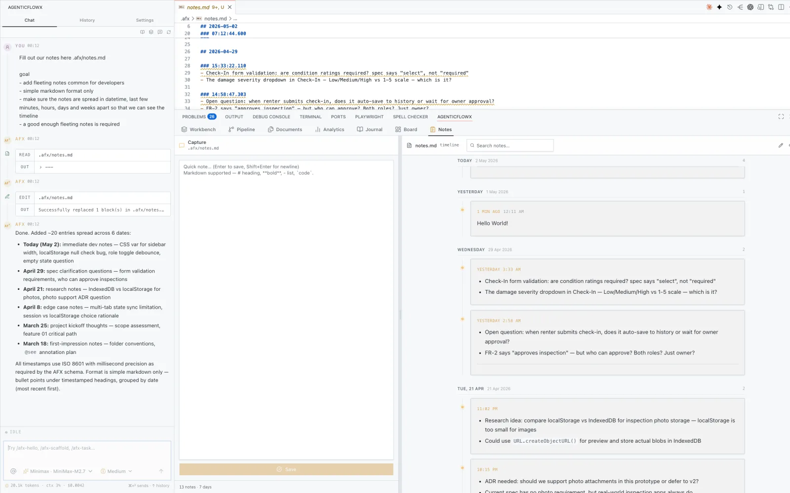
The AFX Workflow
Pause. Think. Plan. Ship.
Standard agent skills for spec-driven AI development. Portable and agent-agnostic — works with or without the extension.
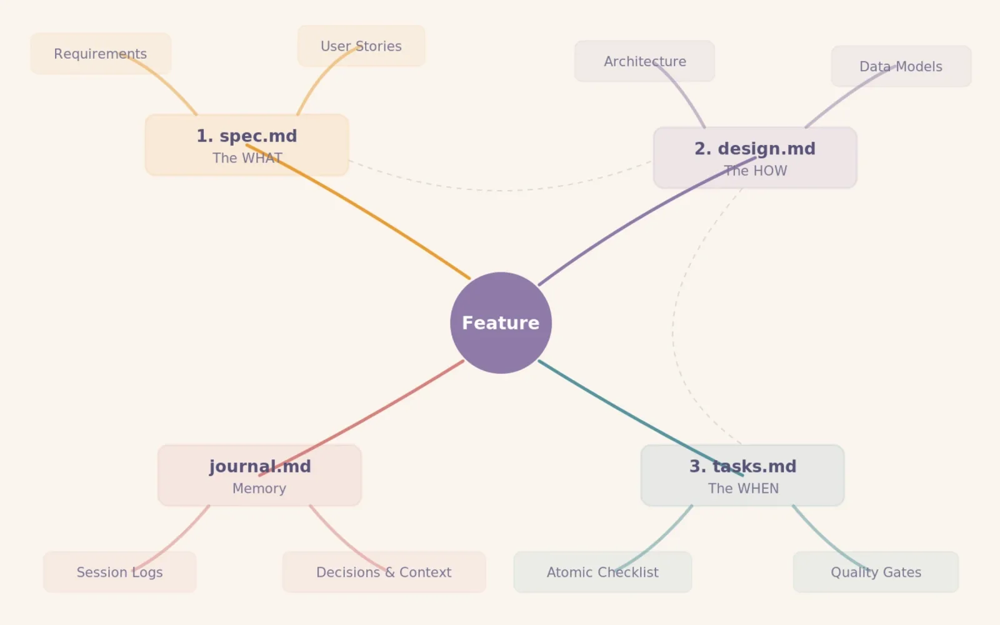
On disk
A spec is just a file. Code points back to it.
No proprietary format, no lock-in. Just markdown with a header —
and plain @see annotations that VS Code can jump through.
---
afx: true
type: SPEC
---
# User Authentication
## Requirements
- FR-1 Users log in with email + password
- FR-2 Sessions expire after 24h idle
- NFR-1 Reset tokens are single-use
## Non-goals
- Social login (out of scope for v1)
/**
* Authentication service — login,
* session refresh, and token issuance.
*
* @see docs/specs/user-auth/spec.md FR-1 FR-2
* @see docs/specs/user-auth/design.md DES-AUTH
*/
export class AuthService {
async login(email, password) {
// Implementation traces to FR-1
}
}
↑ hover FR-1, FR-2, or DES-AUTH above — same preview you get from AFX’s @see CodeLens in VS Code · run /afx-check trace to enforce it across the repo
What AFX adds on top
A capable agent engine — plus a brain that remembers.
28+ providers, 23 tools, MCP support, custom modes, no lock-in — the chat underneath can do what you'd expect. AFX layers a spec-aware brain and a visual workbench on top.
@see CodeLens
Hover any @see annotation to preview the linked spec inline. Jump to the requirement without leaving your code.
Focus Track
Dual-track modes: General for coding, Focus for spec work. Lean prompts that fit even small models — with context strips that follow you.
7-tab Workbench
Workbench, Pipeline, Documents, Analytics, Journal, Board, Notes. A bird's-eye view pinned to the bottom of your editor.
Session continuity
Every session appends a journal.md entry. Pick up where you (or another agent) left off — with the decisions intact.
Agent-agnostic specs
Specs are plain markdown. Run any agent on any feature — in parallel, same blueprint, zero conflict.
Bidirectional traceability
Every function links to a spec requirement. Every requirement maps to code. /afx-check trace enforces it.
Quality gates
Structural, path, link, and trace checks — run via /afx-check. Ship with confidence, not just vibes.
No login. BYO API.
No account, no cloud, no proxy. Claude, GPT, Gemini, Mistral, Groq, local Ollama — your keys, your data, your call.
FAQ
Anticipated questions.
What makes AFX different from a regular AI chat sidebar?+
A chat sidebar is one surface. AFX pairs it with a workbench — a seven-tab bottom panel that tracks your features, specs, tasks, and journal — plus Focus modes tuned for writing specs, designs, and research. Context lives across sessions, and the agent builds what you meant instead of what you typed.
Which AI providers can I use?+
28+ out of the box: Anthropic, OpenAI, Google, Mistral, Groq, DeepSeek, xAI, local Ollama and LM Studio, and others. The agent engine is forked from Roo Code, so anything Roo supports, AFX supports.
Where does my code or data live?+
In your repo, on your machine. AFX has no cloud backend — no login, no signup, nothing leaves your editor except the calls you explicitly make to your chosen AI provider using your own API key. Journals, boards, and specs are all plain markdown files checked into your repo.
Can I use AFX without the VS Code extension?+
Yes. The AFX Workflow is a standalone afx CLI and a set of agent skills you drop into any repo. It works with any AI coding agent that reads markdown — specs and journals are just plain text files. The VS Code extension adds the visual workbench on top, but it's entirely optional.
Is there a learning curve?+
If you already write markdown, not really. Scaffold a feature with /afx-scaffold spec <name>, answer a few prompts, and the agent fills in the spec. From there, it's chat as usual — with the workbench keeping everyone honest.
Will AFX always be free?+
Yes. The core extension is open source under Apache 2.0 and stays free. A hosted tier may come later for teams that want cross-repo syncing or shared boards — but the local-first, BYO-key, no-account experience is permanent.
Get started
Three steps to your first spec.
Start blank, or drop a working example into your repo. Under two minutes either way.
STEP 01
Install the AgenticFlowX extension
From the VS Code Marketplace. On first launch, set your Provider in Settings (OpenAI, Claude, etc.).
VS Code MarketplaceSTEP 02
Install AFX skills required
Without skills, the spec workflow, slash-commands, and the bottom panel stay locked. Works with any AI coding agent.
Your agent — paste this:
Install AFX (AgenticFlowX) in this project. Source: github.com/AgenticFlowX/afx (Apache 2.0, open source).
Run these commands in order:
1. curl -o /tmp/afx-install.sh -sL https://raw.githubusercontent.com/AgenticFlowX/afx/main/afx-cli
2. bash /tmp/afx-install.sh .
After step 2, read the installer output and tell me which skills were installed. Do NOT run /afx-hello or any /afx-* command — those only work inside the AFX chat panel, which I'll open myself. If you can't execute bash, show me the commands so I can run them.
Installs to .claude/skills/ and .agents/skills/. After install, open the AFX chat and run /afx-hello to verify. If your agent refuses the prompt, use the CLI tab above.
Run from your project directory:
curl -sL https://raw.githubusercontent.com/AgenticFlowX/afx/main/afx-cli | bash -s -- .
STEP 03
Scaffold your first spec
In the AFX chat, name the feature. Focus mode drafts a spec, a design, and tasks — pinned to your Workbench.
/afx-scaffold spec my-first-feature
Want the full command list? Run /afx-help inside the AFX chat once the skills are installed.
STEP 01
Install the AgenticFlowX extension
Same as Path A — grab AgenticFlowX from the VS Code Marketplace, then set a Provider in Settings.
VS Code MarketplaceSTEP 02
Pull RoomLedger into a folder
A real project with spec, design, and tasks already wired up — ready to build. Drops into any empty folder.
curl -sL https://raw.githubusercontent.com/agenticflowx/afx/main/afx-cli | bash -s -- example full .
STEP 03
Resume where it left off
Open the folder in VS Code, launch the AFX chat, and ask where you are. The example ships with an in-progress ticket.
/afx-next
Three flavors ship with AFX — starter (spec only), basic (one feature, ready to build), full (four features). List them with afx-cli example list.
Stop coding faster.
Start coding the right thing.
AFX is open source and in alpha. No login, no signup, no cloud — just install, bring your own Provider, and your feedback shapes the roadmap.